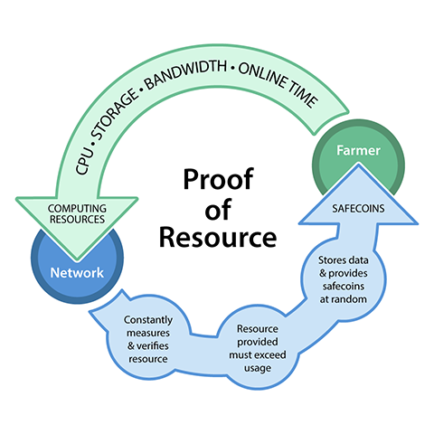

Farmers
As you may know, the SAFE network is comprised by utilising the committed and unused computing resources of the users on the network, we call these users farmers. Farmers, analogous to miners in the Bitcoin world, provide their resources, storage space, CPU and bandwidth in return for safecoin, the currency of network when it launches later this year.
Users can become farmers by anonymously downloading the SAFE network software available when the full network launches later this year and running a vault (a data storage and management location). These vaults require no setup or administration, they are a simple download and install. The SAFE network is designed to self-manage these resources and reward farmers accordingly.
The network stores data on nodes at random, uniformly distributing it across the SAFE network and safecoins are awarded to farmers when data is anonymously retrieved from their vaults. The system utilises a Proof of Resource (P.O.R) model to determine that it is able to use the resource that has been committed to it by the farmer. This continual checking of resource is described in the following illustration.
For those of you who have decided to become farmers you will be able to provide your spare computing resource to the network later this year when the full network goes live. In order to earn safecoins you must provide more resource than you are using. For example, a farmer providing 10GB of storage and using 10Gb will not earn anything, whereas a farmer using 10GB and providing a 100Gb will.
Each node (computer) will be given a ranking by the network, this ranking will be based on the attributes of the node. For example, a node that provides a lot of extra storage, has a powerful CPU and lots of spare bandwidth on a computer that is always switched on will be given a good ranking by the network. The network will give a lower ranking and subsequently store less data on a node that provides less storage, with a slow CPU and limited bandwidth on a computer that is switched on intermittently.
At this point, we are unable to provide any figures about mining speed, there are simply too many variables to even attempt to calculate this with any accuracy. However, as we get the test networks up and running through the course of the next few months, we will start to publish this test data which may lead to a clearer picture about what users can expect. As the network stores data at random in a lottery system, it is likely that if you are looking to farm on a more commercial scale you will be more efficient using multiple commodity PCs (or NAS devices) rather than a single, high powered farming rig. For ongoing discussions about farming on the SAFE network please visit our community run forum.